먼저 꼭 읽어 주세요
- 휴대폰 설정 네 가지를 꼭 해 주세요. 위치 ‘항상 허용’, 알림 허용, 배터리 ‘제한 없음’, 삼성 휴대폰은 ‘자동 절전 예외 앱’에 추가. 그래야 화면이 꺼져 있어도 안내가 이어지고, 차에 타면 감시가 저절로 시작돼요. 처음 실행할 때 차례대로 안내해 드려요. 1. 처음 시작하기
- 차량을 등록하면 차에 타기만 해도 감시가 시작돼요. 처음 한 번은 차에 탄 채로 ‘내 차 찾기’를 누르거나 앱을 연 채로 출발해 주세요. 다음부터는 차에 타서 D를 넣으면 저절로 시작돼요. 2. 자동 시작
- 저절로 시작돼도 앱 화면은 열리지 않아요. 휴대폰이 잠겨 있어도 잠금화면과 알림창에 주행 알림이 떠요. 알림의 감시 종료로 바로 끌 수 있어요. 켜졌는지 보는 법은 3. 잘 되는지 확인에서 알려 드려요.
1처음 시작하기
설치하고 권한을 허용하는 단계예요. 한 번만 하면 돼요. 안드로이드 12 이상에서 쓸 수 있어요.
-
Play 스토어에서 ‘RoadSentry’를 설치해요
무료예요. 회원 가입이나 로그인은 없어요.
-
소개를 넘기고, 약관 두 칸을 체크해 동의해요
위치서비스 이용약관 핵심 내용이 나와요. 약관 동의와 ‘본인은 만 14세 이상입니다’를 체크하고 동의하고 계속을 눌러요. 전문 보기로 전체 약관을 볼 수 있어요.
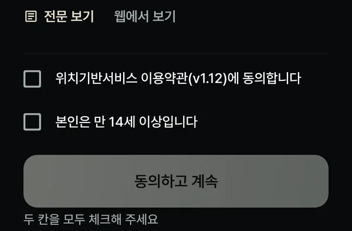
① 두 칸 체크 · ② 동의하고 계속RoadSentry 안드로이드 화면 -
위치 허용 → ‘정확한 위치’를 고른 채 ‘앱 사용 중에만 허용’
안드로이드 권한 창이 떠요. 위쪽 그림에서 정확한 위치를 고른 채 ‘앱 사용 중에만 허용’을 눌러요. ‘이번만 허용’은 고르지 마세요.
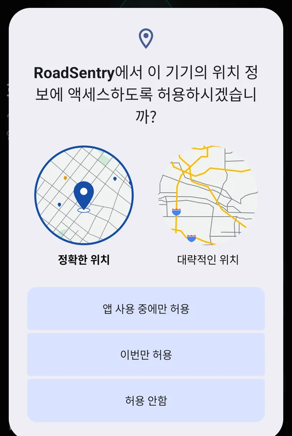
① 정확한 위치 · ② 앱 사용 중에만 허용안드로이드 위치 권한 창 · 휴대폰에 따라 모양이 조금 달라요 -
바로 이어서 뜨는 알림 권한 창에서 ‘허용’
감시하는 동안 알림에 다음 카메라와 속도를 보여 주고, 알림에서 바로 감시를 끌 수 있어요. 자동으로 시작하지 못했을 때와 휴대폰 음량이 너무 작을 때도 알림으로 알려 드려요. 허용하지 않아도 안내 음성은 나와요.
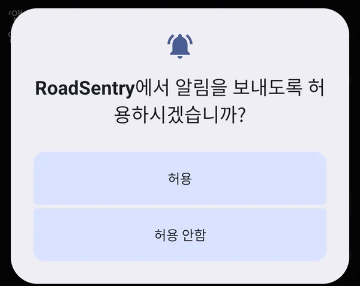
① 허용안드로이드 알림 권한 창 -
위치 줄의 설정 열기 → ‘계속’ → ‘항상 허용’
‘앱을 닫아 둔 동안에도 위치를 사용해요’ 안내가 떠요. 화면이 꺼져 있어도 단속카메라를 안내하고, 차에 타서 출발하면 앱을 열지 않아도 감시를 시작하려면 꼭 필요해요. 계속을 누르면 휴대폰 설정의 위치 권한 화면이 열려요. ‘항상 허용’을 고르고 뒤로 돌아와요.
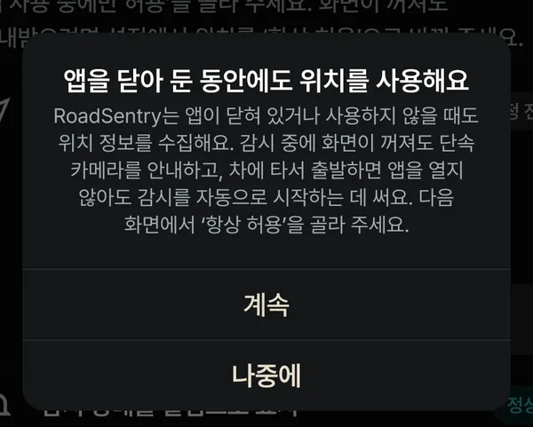
① 계속RoadSentry 안드로이드 화면 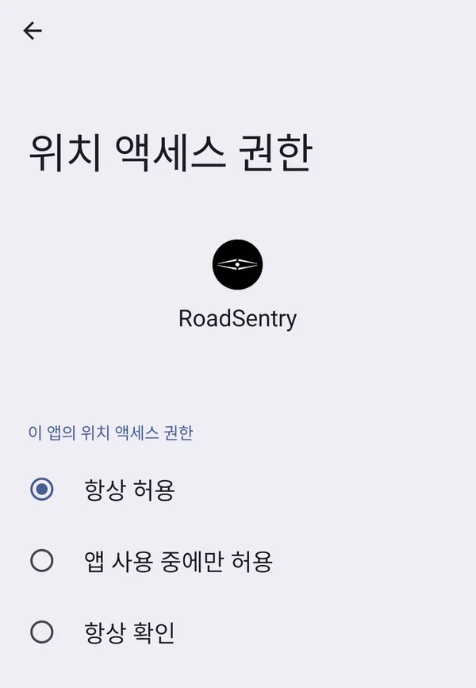
① 항상 허용휴대폰 설정의 위치 권한 화면 · 휴대폰에 따라 글자가 조금 달라요 -
배터리 사용을 ‘제한 없음’으로 바꿔요
휴대폰이 앱을 잠재우면 화면이 꺼진 동안 안내가 멈추거나, 차에 타도 저절로 시작되지 않을 수 있어요. 감시하지 않을 때는 GPS를 계속 켜 두지 않아요.
- 설정 열기를 누르면 RoadSentry 앱 정보가 열려요.
- ‘앱 배터리 사용량’을 눌러요. 삼성은 ‘배터리’를 눌러요.
- ‘제한 없음’을 골라요. 안 보이면 ‘백그라운드 사용 허용’을 먼저 눌러요.
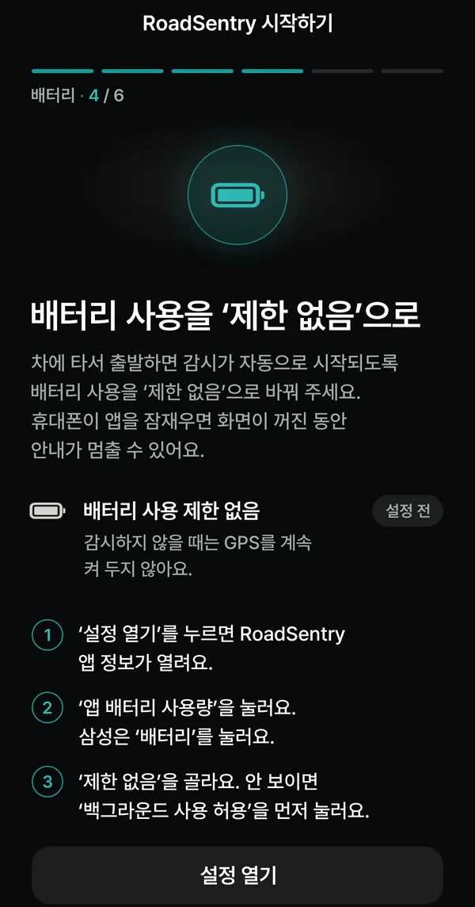
① 설정 열기RoadSentry 안드로이드 화면 -
삼성 휴대폰은 한 가지 더: ‘자동 절전 예외 앱’
삼성 휴대폰은 한동안 쓰지 않은 앱을 잠재워요. 이 단계는 삼성 휴대폰에서만 나와요.
- 휴대폰 설정 › 배터리를 열어요.
- 백그라운드 앱 사용 제한 › 자동 절전 예외 앱을 눌러요. 기종에 따라 ‘절전 예외 앱’일 수 있어요.
- ＋를 눌러 RoadSentry를 추가해요. 배터리가 ‘제한 없음’이면 목록에 안 보일 수 있어요. 이미 예외라 그대로 두면 돼요.
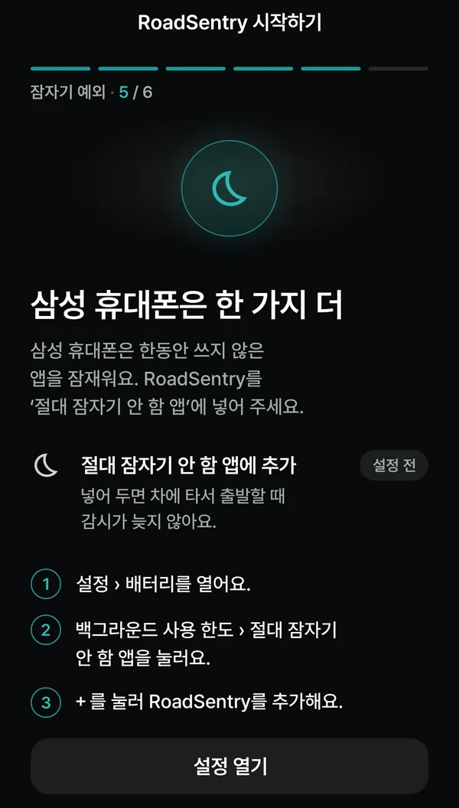
① 설정 열기RoadSentry 안드로이드 화면 · 삼성 휴대폰에서만 나와요 -
마지막 화면에서 시작하기 → ‘감시 종료’ 버튼이 보이면 켜진 거예요
버튼 글자가 ‘감시 종료’면 지금 감시 중이에요. ‘감시 시작’일 때만 눌러 주세요.
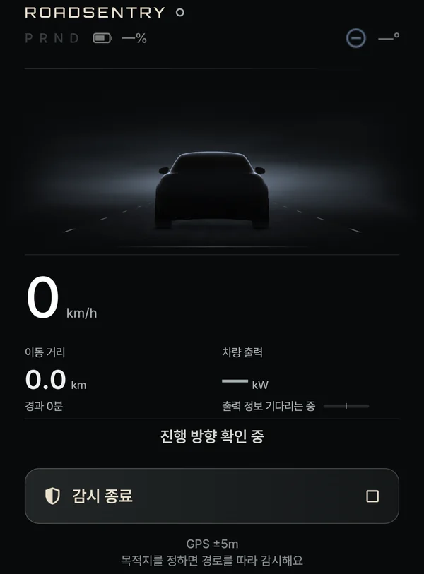
① 감시 종료가 보이면 켜진 상태RoadSentry 안드로이드 화면
- 권한 → 위치: ‘항상 허용’, ‘정확한 위치 사용’ 켬
- 알림: 허용
- 배터리(또는 ‘앱 배터리 사용량’): ‘제한 없음’
차량 등록·자동 시작·소리 설정은 나중에 해도 돼요. 필요할 때 홈과 설정에서 안내해 드려요. 처음 실행 안내는 설정 → 도움말 → 사용방법 소개에서 다시 볼 수 있어요.
2자동 시작
차량을 등록하면 차에 타서 D를 넣는 것만으로 감시가 저절로 시작돼요.
준비물
- 차량 등록을 마쳤어요. (4. 차량 등록)
- 설정 → 차량 연결 · 전비에서 ‘차에 타면 자동 연결’과 ‘기어로 시작·종료’가 켜져 있어요. (기본 켬)
- 위치 권한이 ‘항상 허용’이고 ‘정확한 위치 사용’이 켜져 있어요.
- 배터리 사용이 ‘제한 없음’이에요. 삼성 휴대폰은 ‘자동 절전 예외 앱’에도 넣어 주세요. ‘제한 없음’이라 목록에 안 보이면 그대로 두면 돼요. (1. 처음 시작하기)
- 위치서비스 이용약관에 동의했어요.
이렇게 시작돼요
-
차량을 등록해요
등록 방법은 4장에 있어요.
-
설정 → 알림 → 맨 아래 ‘차에 타면 자동 시작’ 카드를 봐요
처음에는 ‘준비 중’이 보여요. 차에 탄 채로 내 차 찾기를 눌러 주세요. 앱을 연 채로 한 번 출발해도 돼요.
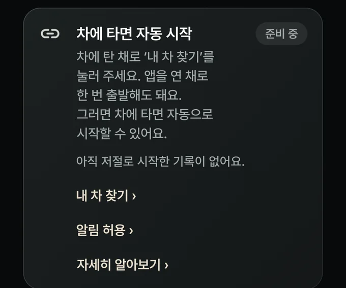
설정 → 알림 → 자동 시작 카드 ‘준비 중’ -
카드에 ‘준비됨’이 보이면 다 된 거예요
다음부터는 차에 타서 D만 넣으면 “주행을 시작합니다”라고 말하며 감시가 켜져요. 카드 아래에 ‘최근 5번 중 4번 저절로 시작했어요.’처럼 저절로 시작한 횟수가 보여요.
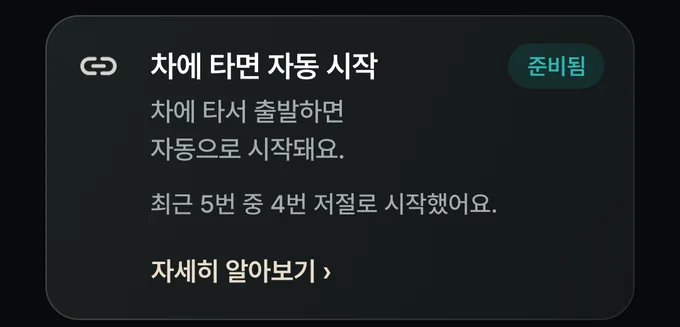
설정 → 알림 → 자동 시작 카드 ‘준비됨’
카드가 알려 주는 상태
- 준비됨: 차에 타서 출발하면 자동으로 시작돼요.
- 준비 중: 차에 탄 채로 ‘내 차 찾기’를 누르거나 앱을 연 채로 한 번 출발해 주세요.
- 확인 필요: 카드 아래 한 줄대로 해 주세요. 설정 열기를 누르면 휴대폰 설정이 바로 열려요.
- 설정 전: 차량 등록 전이면 차량 등록하기를 눌러 등록을 먼저 하고, 등록했다면 두 스위치와 약관 동의를 확인해 주세요.
카드의 자세히 알아보기에서 필요한 휴대폰 설정을 한눈에 볼 수 있어요.
잠금화면과 알림창의 주행 알림
감시가 시작되면 잠금화면과 알림창에 주행 알림이 바로 떠요. 지금 속도, 제한속도, 앞쪽 카메라까지 남은 거리를 보여 주고, 감시 종료로 바로 끌 수 있어요. 무엇이 보이는지는 7. 주행 알림 모양에 있어요.
- 알림을 옆으로 밀어 없애면 그 주행에서는 다시 띄우지 않아요. 다음 주행에서 다시 떠요. 감시와 안내 음성은 그대로예요.
- 잠금화면에 안 보이면 알림이 허용돼 있는지, 휴대폰 설정의 잠금화면 알림 설정에서 알림 내용을 보이게 했는지 확인해 주세요.
‘자동으로 시작하지 못했어요’ 알림이 왔다면
휴대폰이 앱을 막아 저절로 시작하지 못한 거예요. 알림을 누르면 바로 감시가 시작돼요. 알림에 적힌 대로 배터리 사용을 ‘제한 없음’으로, 또는 위치 권한을 ‘항상 허용’으로 바꿔 두면 다음부터 저절로 시작돼요.
차 안에서 쉬는 동안
P를 넣고 차 안에서 쉬는 동안에는 알림창에 ‘차에서 출발을 기다리고 있어요’ 알림이 보일 수 있어요. 이때 기어를 D에 넣으면 바로 “주행을 시작합니다”라고 말하며 감시가 켜져요. 차에서 내리면 알림이 사라져요.
내리면 저절로 정리해요
P를 넣으면 감시가 바로 끝나고 주행 알림도 ‘주행 종료’를 잠깐 보여 준 뒤 사라져요. 차에서 내린 뒤의 정리도 앱이 스스로 해요. 주차한 뒤 잠시 동안 알림창에 조용한 ‘출발 대기’ 알림이 보일 수 있어요. 다시 출발하지 않으면 스스로 사라져요.
저절로 시작을 끄고 싶을 때
설정 → 차량 연결 · 전비에서 ‘차에 타면 자동 연결’이나 ‘기어로 시작·종료’ 중 하나를 끄거나, 위치 권한을 ‘항상 허용’이 아닌 것으로 바꾸면 저절로 시작이 멈춰요. 다시 켜면 처음처럼 한 번 준비한 뒤부터 다시 저절로 시작돼요.
- ‘차에 타면 자동 연결’을 끄면 D를 넣을 때 바로 시작하기와 차로 보내기 예약도 함께 꺼져요.
- 두 스위치를 모두 켜야 차에 타면 자동 시작이 돼요. 하나라도 끄면 저절로 시작이 꺼져요.
차량을 등록하지 않았다면 앱을 열면 감시가 켜져요(설정 → 알림 → ‘앱을 열면 자동 시작’, 기본 켬). 차량 등록을 하면 차에 타서 출발할 때 자동으로 시작돼요. (4. 차량 등록)
3잘 되는지 확인하기
한 번 차에 타 보고, 앱에서 상태를 확인해요.
-
RoadSentry → 설정 → 알림 → 맨 아래 ‘차에 타면 자동 시작’
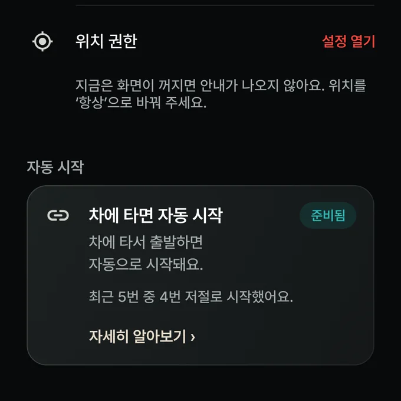
① 차에 타면 자동 시작 카드설정 → 알림 맨 아래 -
카드에 ‘준비됨’이 보이면 돼요
‘준비 중’이면 차에 탄 채로 ‘내 차 찾기’를 누르거나 앱을 연 채로 한 번 출발해 주세요. ‘확인 필요’면 카드 아래 한 줄대로 해 주세요. (2. 자동 시작)
-
차에 타서 D를 넣어 보세요
“주행을 시작합니다”라고 말하면 켜진 거예요. 잠금화면과 알림창에 주행 알림이 떠요(2. 주행 알림). 앱을 열면 ‘감시 종료’ 버튼이 보여요.
차에서는 이렇게 동작해요
차량 등록을 했을 때 차에 타서 D를 넣으면 바로 “주행을 시작합니다”라고 말하며 켜져요. P를 넣으면 바로 끝나요. (설정 → 차량 연결 · 전비의 ‘차에 타면 자동 연결’과 ‘기어로 시작·종료’가 켜져 있을 때예요. 지하 주차장에서도 마찬가지예요.)
차량 등록을 안 했을 때 앱을 열면 켜져요. 앱을 열어 ‘감시 종료’ 버튼이 보이는지로 확인해요.
4차량 등록 (테슬라) 선택
안 해도 카메라 안내는 다 돼요. 등록하면 차에 타기만 해도 저절로 시작되고, 기어를 D에 넣으면 바로 시작하고 P에 넣으면 바로 끝나요. 전비를 계산하고, 목적지를 차로 보낼 수 있어요.
차 안이나 차 옆(10m 안)에서, 카드키를 손에 들고 시작해요. 휴대폰의 블루투스를 켜 두세요. 차 안에서 하면 3분이면 끝나요.
-
홈의 차량 등록을 눌러요
등록 전이면 홈에 ‘차량을 등록해 주세요’가 보여요. ‘나중에 하기’를 눌렀다면 설정 → 차량 연결 · 전비에서 시작할 수 있어요. 첫 화면에서 준비물을 보고 다음을 눌러요.
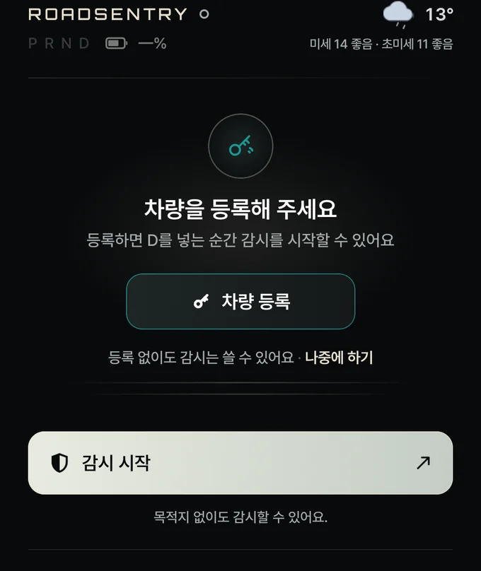
① 차량 등록RoadSentry 안드로이드 화면 -
차량 VIN 17자리를 넣고 차 찾기
차 화면 → 소프트웨어에 나와요. 앞유리 왼쪽 아래에도 적혀 있어요. 복사해 둔 VIN이 있으면 붙여넣기를 눌러요.
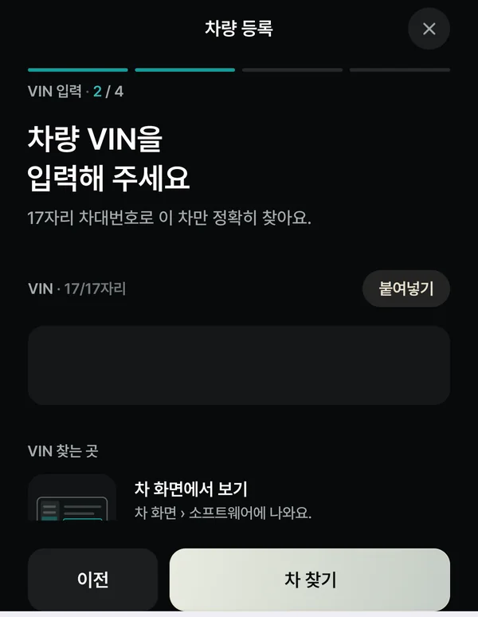
① VIN 17자리 · ② 차 찾기VIN은 가렸어요 -
‘근처 기기’ 권한 창에서 ‘허용’
휴대폰이 블루투스로 차를 찾으려면 필요해요. 놓쳤다면 화면의 설정 열기 → 권한 → 근처 기기를 허용해요.
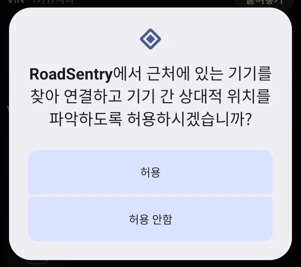
① 허용안드로이드 ‘근처 기기’ 권한 창 -
카드키를 대고 차 화면에서 ‘확인’
카드키를 대면 차 화면에 키를 추가할지 묻는 창이 떠요. ‘확인’을 눌러 주세요. 카드키 인식 위치는 차종마다 달라요. 보통 센터 콘솔의 무선 충전 패드에 있어요. 차 화면 안내를 따르세요. 창을 닫아도 등록은 계속 진행돼요.
-
‘등록됐어요’가 보이면 끝
아래 연결 테스트로 차와 실제로 연결되는지 확인해 보세요.
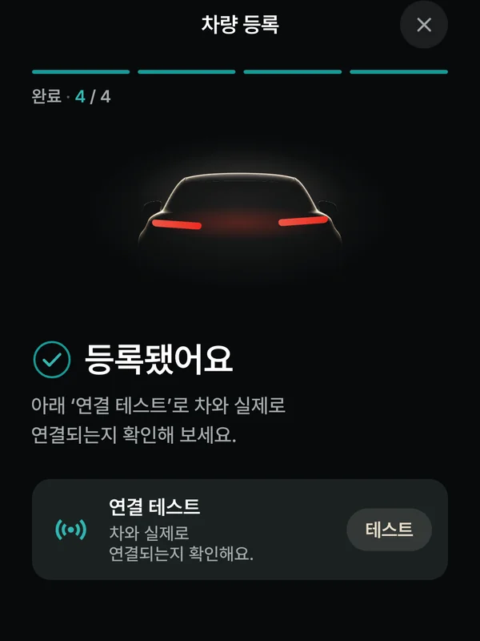
① 연결 테스트RoadSentry 안드로이드 화면
등록한 뒤 설정
설정 → 차량 연결 · 전비에서 바꿔요.
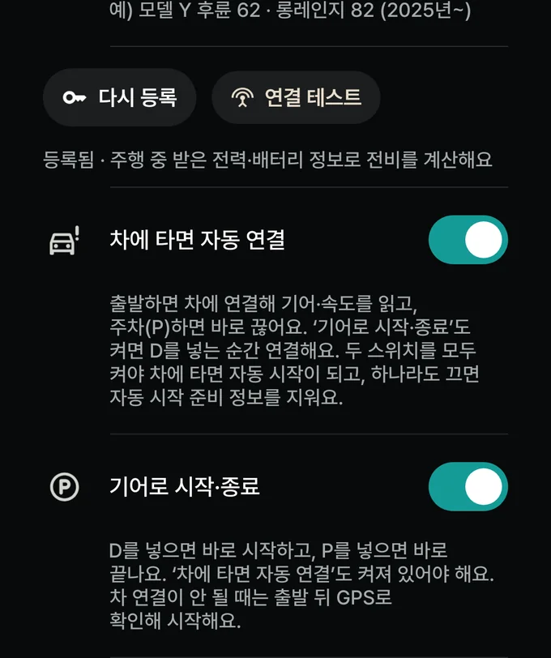
- 1다시 등록 · 연결 테스트 (등록 해제는 옆 휴지통)
- 2차에 타면 자동 연결 (기본 켬). 출발하면 차에 연결해 기어·속도를 읽고, 주차(P)하면 바로 끊어요.
- 3기어로 시작·종료 (기본 켬). D를 넣으면 바로 시작하고, P를 넣으면 바로 끝나요.
같은 화면의 ‘배터리 용량(kWh)’은 숫자 칸에 바로 넣거나(소수 한 자리까지) −/+로 바꿀 수 있어요. 130까지 넣을 수 있어요. 전비 계산에 써요.
차 2대 등록하기
차를 2대까지 등록할 수 있어요. 설정 → 차량 연결 · 전비의 ‘차량 등록’ 아래 차 목록에서 관리해요. 앱이 어느 차에 탔는지 구분해서 주행·충전 기록에 남겨요.
- 이름 붙이기: 차 줄을 눌러 ‘차 이름(선택)’에 이름을 적고(예: 내 모델 Y) 저장을 눌러요. 12자까지 쓸 수 있어요. 비워 두면 ‘Model 3 · 5678’처럼 자동 이름으로 보여요.
- 두 번째 차: 차가 1대일 때 차 목록 아래 ‘차 추가’를 누르면 차량 등록이 처음부터 시작돼요. 주행 중에는 주행이 끝난 뒤에 할 수 있어요.
- 두 번째 차의 자동 시작 준비: 그 차에 탄 채로 차 목록에서 그 차를 누르고 다시 찾기를 눌러 주세요. 찾는 동안 화면을 잠시 열어 두세요.
- 2대일 때는 차 이름 창에서 지금 차로 정하기로 ‘지금 차’를 바꾸거나 이 차 등록 해제로 지울 수 있어요. 지워도 지난 기록은 그 이름 그대로 남아요.
- 기록 탭에서 차를 골라 그 차의 기록만 볼 수 있어요. (6. 기록 탭에서 차 고르기)
5테슬라로 목적지 보내기
앱에서 고른 목적지를 테슬라 내비로 보내요. 차량 등록(4장)을 마친 분이 쓸 수 있어요.
차에 타기 전에 보냈다면 앱이 기억해 두었다가 차에 타서 D를 넣는 순간 보내요. 보낸 뒤 12시간 안에 출발하면 돼요.
달리는 중이나 신호 대기 중에 보냈다면 바로 보내요. 보낸 뒤 “차 화면에서 목적지를 눌러 주세요”라고 한 번 알려 드려요. 차 화면에 뜬 목적지를 한 번 누르면 안내가 시작돼요.
[차로 보내기] 버튼
목적지 검색 결과, 즐겨찾기, 최근 목적지 줄 오른쪽의 차로 보내기를 누르면 돼요. 즐겨찾기는 주행 탭의 ‘목적지 선택’에서 열어요. 장소를 더하려면 목록 맨 위의 ‘장소 추가’를 눌러 장소를 찾은 뒤 별표를 눌러요.
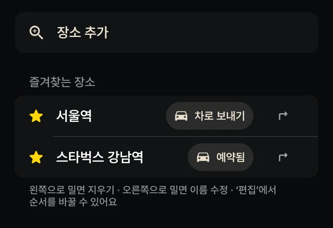
- 차에 타기 전에 누르면 버튼이 ‘예약됨’으로 바뀌어요. D를 넣으면 차로 보내요(12시간 안).
- 보낸 뒤 차 화면에서 목적지를 누르면 ‘차 목적지를 바꿨어요’가 보여요. 1분 안에 바뀌지 않으면 ‘목적지는 그대로예요’와 함께 버튼이 다시 보내기로 바뀌어요.
- 지금 있는 곳에서 아주 먼 곳이면 얼마나 떨어진 곳인지 보여 주고 한 번 더 누르라고 해요. 맞으면 한 번 더 눌러요.
- 충전 경유지가 있는 경로에 보내면 경유지가 지워질 수 있다고 먼저 물어요. 그래도 보내기 또는 보내지 않기를 골라요.
- 운전 중에는 동승자가 누르거나, 신호 대기로 멈췄을 때 눌러 주세요.
- 보내지 못했을 때는 테슬라 앱으로 보내기가 보여요. 누르고 공유 창에서 Tesla를 고르면 돼요.
지도에서 위치 골라 보내기
검색한 장소의 입구가 다르거나 정확한 자리로 보내고 싶을 때 써요.
장소를 검색한 뒤 목록 아래 지도에서 직접 고르기를 눌러요
결과 줄을 길게 눌러 ‘지도에서 위치 고르기’를 골라도 돼요.
지도를 움직여 가운데 핀을 원하는 곳에 맞춰요
멈추면 그 자리의 이름을 찾아 보여 줘요.
이 위치를 차로 보내기를 눌러요
앱 목적지로만 정하려면 목적지로만 정하기를 눌러요.
보낼 수 없을 때
예약을 지킬 수 없는 상태면 예약하지 않고, 까닭을 한 줄로 알려 드려요. 대부분 그 아래 버튼으로 바로 고칠 수 있어요.
- 차량을 등록하지 않았을 때: ‘차량 등록 후 쓸 수 있어요’와 차량 등록
- ‘차에 타면 자동 연결’이나 ‘기어로 시작·종료’가 꺼져 있을 때: 켜야 한다는 안내와 설정 열기
- 위치서비스 이용약관에 동의하지 않았을 때: 동의는 설정 → 도움말 → 위치서비스 이용약관에서 해요.
- 위치 권한이 꺼져 있을 때: 설정 열기(휴대폰 설정)
- 차가 이 휴대폰의 키를 모를 때: 다시 등록해야 한다는 안내와 설정 열기
[예약 취소]
차에 타기 전에 보낸 예약은 상태 줄 아래 예약 취소로 지울 수 있어요. 그 예약으로 정한 앱 목적지도 함께 지워져요. 예약 시간(12시간)이 지나면 ‘예약 시간이 지나 취소했어요’가 보여요. 이때 앱 목적지는 그대로 둬요.
6충전·통행료·기록
충전 요금과 통행료를 주행 기록에 함께 모아 보여 드려요. 계산은 모두 이 휴대폰 안에서 해요.
자주 충전하는 곳 (최대 3곳)
설정 → 차량 연결 · 전비 → 충전 요금 아래 ‘자주 충전하는 곳’에서 정해요. 회사, 아파트 충전기처럼 자주 가는 곳을 3곳까지 넣을 수 있어요.
-
‘충전 장소 추가’를 눌러요
오른쪽 숫자는 지금까지 정한 곳의 수예요.
-
‘즐겨찾기에서 고르기’ 또는 ‘지도에서 핀으로 정하기’
지도에서 정할 때는 지도를 움직여 핀 끝을 충전하는 자리에 맞추고, 이름을 넣은 뒤 이 위치로 정하기를 눌러요. 이름과 위치는 이 휴대폰에만 저장돼요.
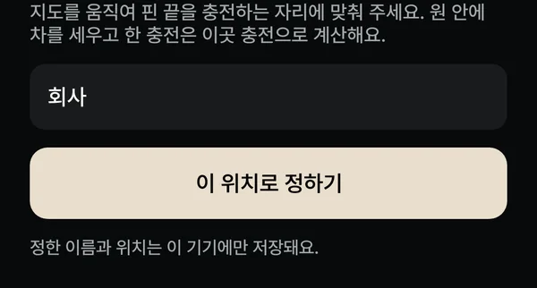
① 이 위치로 정하기지도에서 핀으로 정하기 화면 아래쪽 -
단가를 넣어요 (선택)
곳마다 원/kWh 단가를 넣을 수 있어요. 비워 두면 집 완속 단가로 계산해요. 0을 넣으면 무료로 계산해요.
- 정해 둔 곳에서 300m 안에 차를 세워 두고 한 충전은 완속·급속 모두 그곳 단가로 계산해요. 차가 슈퍼차저로 알려 준 충전은 슈퍼차저 단가로 계산해요.
- 잘못 나뉘었으면 충전 기록에서 변경을 눌러 종류를 직접 바꾸거나, 금액이나 단가를 직접 넣을 수 있어요.
- 지우려면 그 줄의 휴지통을 누르고 지우기를 눌러요. 이곳 단가로 계산한 지난 충전은 충전기 종류별 단가로 다시 계산돼요.
충전 금액 직접 넣기 · 이름 붙이기
영수증 금액이 앱 계산과 다르면 그 충전의 금액이나 1 kWh당 단가를 직접 넣을 수 있어요. 기록 → 달력 아래 충전 요금 카드를 누르면 충전 기록이 보여요.
충전 기록 줄의 ‘종류 선택’이나 ‘변경’을 누르고 ‘직접 입력’을 골라요
-
금액(원)이나 단가(원/kWh)를 넣고, 원하면 이름도 적어요
넣는 동안 바로 계산한 한 줄이 보여요. ‘이름(선택)’에 ‘회사 충전기’처럼 이름을 적으면 그 충전에 이름이 붙어요. 다 되면 적용을 눌러요.
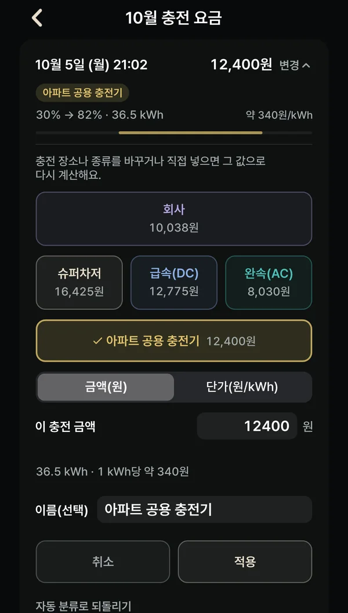
① 금액(또는 단가) · ② 이름(선택) · ③ 적용예시 기록
- 넣은 값은 충전 요금, 주간·월간 이동 비용, 엑셀 파일에 그대로 들어가요.
- 다시 자동으로 계산하려면 자동 분류로 되돌리기를 누르거나 다른 종류를 고르면 돼요.
예상 통행료
주행이 끝나면 주행 카드에 지나온 유료도로의 예상 통행료가 한 줄로 보여요.
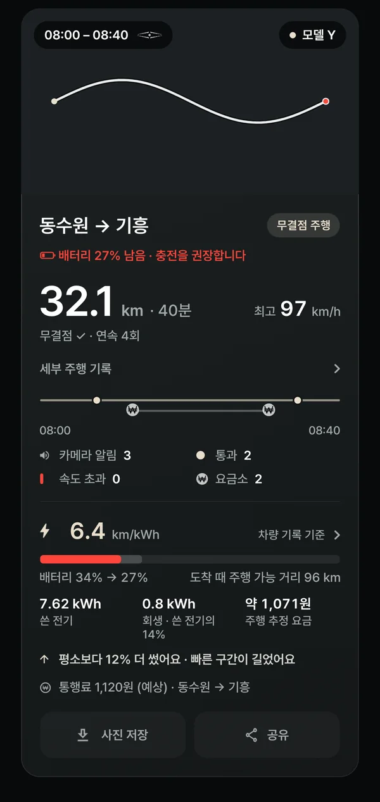
- 일반 승용차 요금으로 계산해요. 설·추석 연휴 면제는 저절로 반영하고, 출퇴근 할인은 반영하지 않아요.
- 일부 구간을 확인하지 못하면 ‘일부 구간 확인 필요’, 요금 자료가 없는 도로가 있으면 ‘일부 도로 요금 정보 없음’으로 보여요.
- 요금소를 나가기 전에 주행이 끝나면 ‘통행료는 다음 주행에 넣어요’가 보여요.
통행료 감면 설정
설정 → 차량 연결 · 전비 → 통행료에서 내 상황에 맞게 골라요. 통행료 표시, 하이패스 사용, 전기차 감면 하이패스 단말기, 감면 대상(장애인·국가유공자 등·고엽제), 거주지·등록지를 고를 수 있어요. 감면 대상과 거주지는 이 휴대폰에만 저장하고, 기록 내보내기에는 들어가지 않아요. 통행료는 예상 금액이라 실제 청구 금액과 다를 수 있어요.
기록 탭: 달력 · 주간 · 월간
기록 탭 위에서 달력 주간 월간을 골라요.
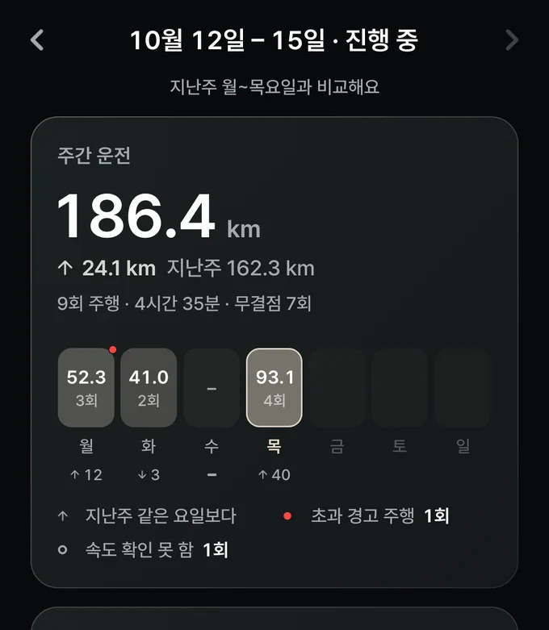
- 달력: 날짜를 누르면 그날 주행 카드가 보여요.
- 주간: 요일 칸에 그날 달린 거리, 지난주 같은 요일과 비교, 초과 경고가 있던 주행을 보여 줘요. 아래로 안전 운전, 자주 다닌 길, 이동 비용(충전 요금과 예상 통행료), 평균 전비가 이어져요.
- 월간: 달린 거리와 날마다의 막대, 초과 경고 횟수, 무결점 주행만 한 날, 최고 연속이 보여요. 사진 저장 · 공유도 돼요. 공유 이미지에는 장소 이름이 들어가지 않아요.
기록 탭에서 차 고르기
차를 2대 등록했다면 기록 탭 위쪽에 차 이름 칩이 나와요. 하나를 고르면 그 차의 달력·주간·월간만 보여요. 어느 차인지 확실하지 않은 기록은 ‘확인 필요’ 칩으로 따로 모여요. 누르면 어느 차였는지 물어요. 확인 필요 기록은 합계에 넣지 않아요.
기록 탭 위쪽 ‘내 차 누적 주행거리’ 줄에는 차 계기판의 누적 주행거리와 그 값을 읽은 날이 보여요. 차에서 읽은 값이 아직 없으면 이 줄이 보이지 않아요.
전비 표시 기준
전비 숫자 옆의 말이 그 숫자를 어떻게 구했는지 알려 줘요. 전비 줄을 누르면 근거를 볼 수 있어요. 주차(P) 중에 쓴 전력(캠핑·센트리)은 전비에 넣지 않고 ‘주차 중 소모’로 따로 보여요.
기록 내보내기 (엑셀)
기록 탭 왼쪽 위 공유 아이콘을 누르거나, 설정 → 기록 내보내기로 열어요. 엑셀로 내보내기를 누르면 주행 시트와 충전 시트가 든 엑셀 파일을 만들어 공유 창을 띄워요. 드라이브·메일·메신저로 보내거나 저장할 수 있어요. 좌표와 경로는 들어가지 않아요.
주간 요약 알림
매주 월요일 아침에 ‘지난주 운전 요약이 나왔어요’ 알림이 와요. 누르면 기록 탭 주간 칸이 바로 열려요. 설정 → 알림 → ‘주간 요약 알림’에서 끌 수 있어요(알림을 허용한 경우에만).
7그 밖의 기능
따로 켜지 않아도 되는 건 설치만 하면 바로 써요.
주행 알림 모양
감시 중 잠금화면과 알림창의 주행 알림에는 이런 것이 보여요. 값이 있는 칸만 보여요.
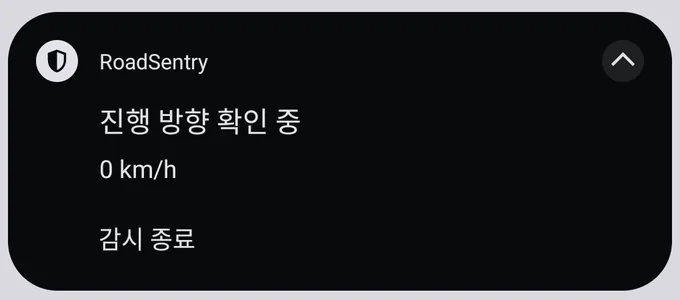
- 위: 한 줄 안내. 카메라가 있으면 남은 거리와 제한속도를 보여요.
- 아래: 지금 속도 · 제한 · 전방 카메라 · 구간단속(구간 안에서는 구간 평균) · 기어와 배터리(차량 등록을 했을 때).
- 카메라가 600m 안으로 가까워지면 남은 거리가 막대로 보여요. 과속 중이면 빨간색이에요.
- 안드로이드 16 이상에서는 상태 표시줄에도 남은 거리(없으면 지금 속도)가 작게 보일 수 있어요. 휴대폰에 따라 달라요.
- ‘업데이트 지연 · 앱에서 확인’이 보이면 앱을 한 번 열어 주세요.
- 주행이 끝나면 ‘주행 종료’ 알림이 잠깐(약 10초) 보였다가 사라져요.
화면 테마 · 집중
설정 → 알림 → ‘감시 동작’의 화면 테마에서 기본과 집중 중에 골라요. 집중은 차 그림 대신 속도를 가운데 크게 보여 줘요. 세로 화면과 가로 계기판이 함께 바뀌어요.
가로 계기판
감시 중에 휴대폰을 가로로 돌리면 속도, 제한속도, 카메라까지 남은 거리를 큰 화면으로 보여 드려요. 주행 탭의 ‘계기판 모드’를 눌러도 열려요. 닫기는 ✕를 누르거나 휴대폰을 다시 세로로 돌리면 돼요.
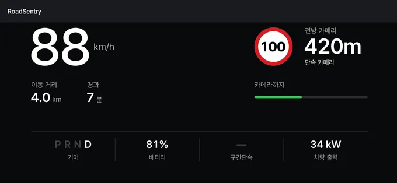
- 설정 → 알림 → ‘가로로 돌리면 계기판 모드’를 끄면 저절로 바뀌지 않아요.
- 설정 → 알림 → ‘가로 계기판 고정’을 켜면 감시 중에는 휴대폰을 돌리지 않아도 가로 계기판을 띄우고, 세로로 들어도 닫지 않아요. ✕를 누르거나 주행이 끝나면 닫혀요.
화면 꺼짐 방지
설정 → 알림 → ‘화면 꺼짐 방지’를 켜면 앱을 열어 둔 동안 화면이 꺼지지 않아요. 주차하고 잠시 지나면 화면을 계속 켜 두지 않아요.
초과 기준
설정 → 알림 → 안내 기준 → 초과 기준에서 과속 경고가 울리는 기준을 골라요. 0% · 5% · 10%(기본) · 15% 또는 +5km/h · +10km/h · +15km/h 중에 고를 수 있어요. km/h로 고르면 차의 속도 제한 경고와 같은 기준으로 맞출 수 있어요. 카메라 위치 안내는 그대로예요.
시내 첫 안내 거리
설정 → 알림 → 시내 첫 안내 거리에서 550m(기본) · 300m · 200m 중에 골라요.
- 시속 80km보다 느린 일반도로에서는 소리 안내를 늘 고른 거리까지 늦춰요. 제한속도를 넘고 있으면 그때 함께 알려요.
- 고속도로에서는 시속 60km보다 느릴 때만 늦춰요. 화면 카드는 먼저 뜨고, 구간단속·보호구역에서는 바로 알려요.
안내 음성과 음량
- 안내 소리는 휴대폰 음량을 따라요. 휴대폰 옆 버튼으로 음량을 올리면 안내도 커져요. 설정 → 소리 → ‘안내 음량’은 그 안에서 RoadSentry 안내만 더 크게, 작게 맞춰요.
- 설정 → 소리 → ‘차 블루투스 최대 음량’(기본 켬): 차 블루투스로 들을 때는 ‘안내 음량’과 관계없이 가장 크게 들려요.
- 음량이 너무 작거나 꺼져 있으면 ‘휴대폰 음량이 너무 작아요’ 또는 ‘차 스피커 음량이 작아요’가 떠요. 휴대폰 옆 버튼이나 운전대 스크롤 휠로 올려 주세요.
- 설정 → 소리 → ‘안내 시 음악 소리 줄이기’(기본 켬): 안내가 나오는 동안 음악 소리를 잠깐 줄여요.
- 설정 → 소리 → ‘주행 시작·종료 안내’(음성 안내가 켜져 있을 때 보여요): 끄면 ‘주행을 시작합니다’ · ‘주행을 종료합니다’만 말하지 않아요. 카메라 안내는 그대로 나와요.
- 설정 → 소리에서 알림 목소리와 효과음을 미리 듣기로 들어 보고 선택으로 고를 수 있어요.
통화 중 안내
- 기본으로는 통화 중에 안내 소리를 내지 않아요. 스피커폰 통화도 통화로 알아채요.
- 설정 → 소리 → ‘통화 중에도 소리로 안내’(기본 끔)를 켜면 통화 중에도 카메라, 구간단속, 과속 안내만 소리로 알려요. 기기에 따라 작게 들리거나 들리지 않을 수 있어요.
- 설정 → 소리 → ‘함께 탈 때 한 번만 안내’(기본 끔): 함께 탄 사람도 로드센트리를 쓰면 안내가 두 번 들려요. 켜 두면 차에 연결된 휴대폰만 소리를 내고, 다른 휴대폰은 소리 없이 화면으로 알려요.
폰 스피커로만 듣기 (삼성 갤럭시)
테슬라 차 안에서 음악을 틀고, RoadSentry 안내는 휴대폰 스피커로만 듣고 싶을 때예요. 삼성 휴대폰의 ‘앱 소리 분리 재생’을 쓰면 돼요.
- 휴대폰을 차 블루투스에 연결한 상태에서 설정 → 소리 및 진동 → 앱 소리 분리 재생 → ‘지금 켜기’를 켜요.
- 앱은 RoadSentry, 오디오 기기는 휴대전화를 골라요.
- RoadSentry 설정 → 소리 → ‘알림 목소리’의 미리 듣기를 눌러 휴대폰에서 들리면 끝이에요.
- 이렇게 쓸 때는 설정 → 소리 → ‘함께 탈 때 한 번만 안내’를 꺼 두세요.
- 삼성이 아닌 휴대폰은 휴대폰 설정 → 블루투스 → 차 이름 옆 설정에서 ‘미디어 오디오’를 끄면 RoadSentry 안내가 휴대폰에서 들려요. 이때는 다른 앱 소리도 휴대폰에서 나와요.
날씨 · 미세먼지
홈 날씨 옆에 가까운 측정소의 미세먼지·초미세먼지가 보여요(위치서비스 이용약관에 동의한 경우). 날씨를 누르면 시간별 기온과 강수확률, 미세먼지 측정소와 측정 시각을 볼 수 있어요. 날씨는 Apple 날씨, 미세먼지는 한국환경공단 에어코리아의 실시간 자료(확정 전 값)예요.
주차 사진
‘주차’ 탭에서 기둥 번호나 구역 표지판을 사진으로 찍어 둘 수 있어요(최대 4장). 사진은 이 기기 안에만 있고, 갤러리나 백업에 들어가지 않아요. 다음 주행을 시작하면 지워져요.
도착하면 목적지를 정리해요
목적지 500m 안에서 주차(P)하면 앱 목적지를 바로 지워요. 3km 안이면 30분 넘게 머문 뒤 다시 출발할 때 지워요. 그보다 멀리 세웠다면(중간 충전 등) 그대로 둬요.
월간 리포트 · 에코 코칭
매달 1일, 지난달 운전을 한 장으로 정리해 드려요. 기록 탭 달력 위 배너나 월간을 누르면 열려요. 차량 등록을 하고 달린 주행에서는 평소보다 전기를 더 썼는지, 덜 썼는지 한 줄로 알려 드려요.
설정 → 알림의 알림 항목
- 과속방지턱 알림: 켜면 과속방지턱 약 150m 앞에서 알려 드려요. 기본은 꺼져 있어요.
- 월간 리포트 알림: 매달 1일 아침에 알려 드려요.
- 주간 요약 알림: 매주 월요일 아침에 알려 드려요.
공지사항
설정 → 도움과 정보 → 공지사항에서 업데이트 소식과 알림을 볼 수 있어요. 새 공지가 있으면 제목 옆에 점이 보여요.
사용방법 소개
설정 → 도움말 → 사용방법 소개에서 앱 사용법을 6장으로 넘겨 볼 수 있어요. 장마다 그 설정으로 바로 가는 버튼이 있어요.
새 버전 알림
Play 스토어에 새 버전이 나오면 앱을 열 때 한 번 알려 드려요. Play 스토어에서 업데이트를 누르면 돼요.
앱 안에서 이 설명서 보기
RoadSentry → 설정 → 도움말 → 맨 위 사용 설명서 보기
8자주 묻는 질문
눌러서 펼쳐 보세요.
차에 탔는데 자동으로 안 켜져요
먼저 설정 → 알림 → 맨 아래 ‘차에 타면 자동 시작’ 카드를 열어 보세요.
- ‘확인 필요’가 보이나요? 카드 아래 한 줄대로 해 주세요.
- ‘준비 중’이 보이나요? 차에 탄 채로 ‘내 차 찾기’를 누르거나 앱을 연 채로 한 번 출발해 주세요.
- ‘설정 전’이 보이나요? 차량 등록 전이면 등록을 먼저 하고(4. 차량 등록), 등록했다면 두 스위치와 약관 동의를 확인해 주세요.
- 설정 → 차량 연결 · 전비에서 ‘차에 타면 자동 연결’과 ‘기어로 시작·종료’가 둘 다 켜져 있나요?
- 위치 권한이 ‘항상 허용’이고 ‘정확한 위치 사용’이 켜져 있나요?
- 배터리 사용이 ‘제한 없음’인가요? 삼성 휴대폰이면 ‘자동 절전 예외 앱’에 들어 있나요? (‘제한 없음’이라 목록에 안 보이면 괜찮아요.)
- 최근에 앱을 ‘강제 중지’했나요? 앱을 한 번 열면 다시 켜져요.
그래도 안 켜지면 진단 기록을 보내 주세요.
저절로 시작됐는데 앱 화면이 안 열려요
정상이에요. 저절로 시작돼도 앱 화면은 열리지 않아요. 잠금화면과 알림창에 주행 알림이 보이고, 앱을 열면 ‘감시 종료’ 버튼이 보여요. 차량 등록을 했다면 D를 넣을 때 “주행을 시작합니다”라고 알려요.
‘자동으로 시작하지 못했어요’ 알림이 와요
휴대폰이 앱을 막아 저절로 시작하지 못한 거예요. 알림을 누르면 바로 감시가 시작돼요. 그다음 휴대폰 설정 → 애플리케이션 → RoadSentry에서 배터리 ‘제한 없음’, 위치 ‘항상 허용’을 확인해 주세요. 삼성 휴대폰은 ‘자동 절전 예외 앱’에도 넣어 주세요. ‘제한 없음’이라 목록에 안 보이면 그대로 두면 돼요.
저절로 시작을 끄고 싶어요
설정 → 차량 연결 · 전비에서 ‘차에 타면 자동 연결’이나 ‘기어로 시작·종료’ 중 하나를 끄거나, 위치 권한을 ‘항상 허용’이 아닌 것으로 바꾸면 저절로 시작이 멈춰요. ‘차에 타면 자동 연결’을 끄면 ‘차로 보내기’ 예약도 함께 꺼져요.
주행 알림이 안 떠요 / 알림을 없애고 싶어요
- 휴대폰 설정 → 애플리케이션 → RoadSentry → 알림이 켜져 있는지 봐 주세요. 꺼져 있어도 감시와 안내 음성은 그대로예요.
- 잠금화면에서만 안 보이면 휴대폰 설정의 잠금화면 알림 설정을 확인해 주세요.
- 알림을 옆으로 밀어 없애면 그 주행에서는 다시 뜨지 않아요. 다음 주행에서 다시 떠요.
주행하지 않을 때도 배터리를 쓰는 것 같아요
차량 등록을 하셨다면, 주차한 뒤 잠시 동안 다시 출발하는지 기다려요. 이때 알림창에 조용한 ‘출발 대기’ 알림이 보여요. 출발하지 않으면 스스로 멈춰요.
차 안에서 쉬는 동안에는 ‘차에서 출발을 기다리고 있어요’ 알림이 보일 수 있어요. D를 넣으면 바로 시작하려고 기다리는 거예요. 차에서 내리면 멈춰요. 원하지 않으면 설정 → 차량 연결 · 전비의 ‘차에 타면 자동 연결’을 끄면 돼요.
차량 등록을 하지 않으셨다면 앱을 열면 바로 감시를 시작하고, 출발하지 않거나 주행 뒤 차를 세워 두면 스스로 멈춰요.
목적지를 보냈는데 차에서 안내가 시작되지 않아요
보낸 목적지는 차 화면에 뜨고, 차 화면에서 목적지를 한 번 눌러야 안내가 시작돼요.
- 차에 타기 전에 보냈다면 D를 넣는 순간 보내요. 12시간이 지나면 예약이 취소돼요.
- 차량 등록과 약관 동의가 필요하고, ‘차에 타면 자동 연결’과 ‘기어로 시작·종료’를 켜 두어야 해요. 위치 권한은 ‘항상 허용’으로 해 주세요. 하나라도 빠지면 앱이 까닭을 알려 드려요(보낼 수 없을 때).
- 보내지 못했다면 테슬라 앱으로 보내기를 눌러 공유 창에서 Tesla를 골라요.
지하 주차장에서 나갈 때 늦게 켜져요
차량 등록을 했다면 지하에서도 기어를 D로 넣으면 바로 켜져요(‘차에 타면 자동 연결’과 ‘기어로 시작·종료’를 켠 경우). 차량 등록을 안 했다면 지하에서는 GPS가 잡히지 않아, 밖으로 나와 GPS가 잡힌 뒤에 켜질 수 있어요.
차 키와 같이 써도 안전한가요?
- RoadSentry에는 문을 열거나 잠그는 기능이 없어요.
- 목적지를 차로 보내는 것은 D를 넣은 뒤에만 해요. 주차 중에 [차로 보내기]를 누르면 앱이 기억만 해 두고, 그때는 차에 아무것도 보내지 않아요.
- 차 키 목록에 RoadSentry 키가 하나 보여요. 휴대폰을 바꿀 때는 차 화면 ‘잠금’ 메뉴의 키 목록에서 지워 주세요.
새 휴대폰으로 바꿨어요
- 차량 등록을 했다면 차 화면 키 목록에서 예전 RoadSentry 키를 지우고, 새 휴대폰에서 차량을 다시 등록해요. 그다음 차에 탄 채로 ‘내 차 찾기’를 누르거나 앱을 연 채로 한 번 출발해 주세요.
- 새 휴대폰에서도 위치 ‘항상 허용’, 배터리 ‘제한 없음’을 다시 해 주세요.
안내가 실제와 달라요 / 카메라를 놓쳤어요
위치·통신·제공 정보에 따라 안내가 늦거나 빠질 수 있어요. 실제 도로 표지와 제한속도를 먼저 봐 주세요. 차를 세운 뒤 진단 기록을 보내 주시면 원인을 찾는 데 큰 도움이 돼요.
9문의하기
문제가 생기면 진단 기록을 먼저 보내고, 받은 접수번호를 함께 알려 주세요.
설정 → 도움말 → 진단 로그
-
‘진단 기록 보내기’를 눌러요
정확한 위치(좌표·진행 방향)는 지운 뒤 보내요. 목적지 이름도 빠져요.
-
접수번호와 상황을 알려 주세요
언제, 어디쯤(대략), 무엇이 이상했는지 적어 주시면 돼요. 앱의 설정 → 도움말 → 문의하기에서도 메일을 보낼 수 있어요.